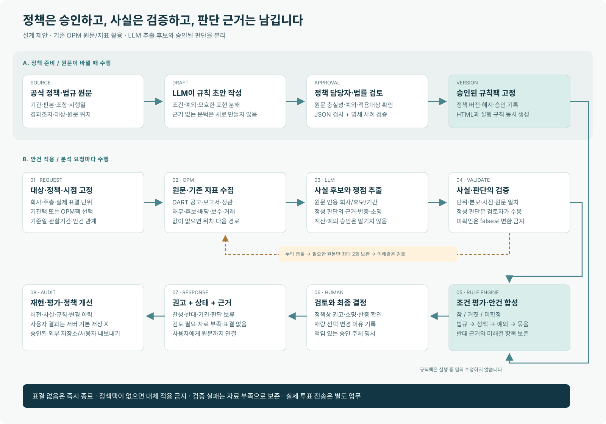

LLM이 읽고,
규칙이 일관되게 적용되게
새 파서를 계속 늘리기 전에 원문·지표·규칙·검토의 연결을 만듭니다. 데이터 제공 서버라는 OPM의 역할을 유지하면서 판단 과정을 재현 가능하게 설계합니다.
OPM은 검증된 숫자와 원문 위치를 제공합니다. LLM 호출은 우선 클라이언트 측에 두고, 사실 후보의 수용과 정책 적용을 명시적 계약으로 연결합니다. 서버 내 LLM 도입은 운영비·접근권·저장 정책을 검토한 후 별도 선택할 수 있습니다.
{kind=link}
정책 준비와 안건 적용을 분리합니다

그림의 규칙팩 승인·검증·사람 검토는 제안된 프로세스입니다. 현재 이 기능이 운영에 구현되었다는 뜻이 아닙니다. 도식은 벡터 파일로 확대하거나 재사용할 수 있습니다.
각 구성요소의 책임
| 구성요소 | 담당하는 일 | 명확히 남길 출력 |
|---|---|---|
| 정책 원문 저장·등록 | 기관명·원문 링크·원문 해시·공개일·시행일·개정/폐지 관계·적용범위 관리 | source_id, source_version, clause_locator, effective interval, verification status |
| 정책 정규화 | 문장 → 적용 대상 → 조건 → 예외 → 권고/허용재량 → 필요한 증거. LLM 초안 뒤 담당자 확인 | 승인된 policy pack. 미확인 항목은 disabled/unverified. 모든 문장을 자동 실행 가능하다고 간주하지 않음. |
| OPM 데이터 계층 | 기존 도구로 원문과 검증된 파생지표 공급. 분모·시점·회계범위와 공고-안건-후보 연결 | EvidenceBundle + 후보 값 + missing_information + next_retrieval |
| 클라이언트 LLM | 쟁점 분해·사실 후보·정관 전후 비교·회사 소명·반대 근거·추가 조회 제안 | 구조화된 FactProposal/AssessmentProposal. 원문 위치가 없는 결론은 수용 대상에서 제외. |
| 검증·수용 계층 | 타입·단위·원문 인용 일치·회사/후보/기간·정정 관계 검사. 정성 판단은 사람 수용 | verified / unknown / conflicting / stale / invalid / not_applicable. confidence는 보조 정보. |
| 결정 엔진 | 숫자 계산, 고정 규칙 평가, 예외·충돌·묶음·조건부 관계 합성 | RuleTrace + recommended_vote + workflow_status + legal_status. 정책의 기본값으로 근거 덮어쓰기 금지. |
| 검토·설명 계층 | 사람이 재량과 최종 결론 결정. LLM은 검증된 추적만 설명으로 렌더링 | 근거·반증·부족 자료·사용 규칙·변경 사유. 실제 투표 명령과 분리. |
최소한의 증거 계약을 먼저 만듭니다
숫자 하나에도 “무엇을 언제 어떻게 읽었나”가 붙습니다. 소집공고에 75%라고 적혀 있더라도 회사 평균인지, 후보 개인의 임기 전체인지 모르면 B01의 입력으로 사용할 수 없습니다.
{
"metric_id": "director.attendance_pct",
"value": 62.5,
"status": "verified",
"unit": "percent",
"entity_id": "SYNTHETIC_CO / SYNTHETIC_CANDIDATE",
"agenda_id": "SYNTHETIC_AGENDA",
"period_start": "2023-03-01",
"period_end": "2026-02-28",
"public_at": "2026-03-01T10:00:00+09:00",
"evidence_refs": [
"E1"
],
"accepted_by": "reviewer-id",
"derivation": {
"attended_count": 5,
"eligible_count": 8,
"formula": "attended_count / eligible_count * 100",
"source_refs": [
"E1"
]
}
}실제 EvidenceBundle의 E1에는 접수번호, 문서 URL, 조항/표/행 위치, 원문 인용, 인용 범위 해시, 정정 관계, 공시 공개시점이 들어갑니다. 위 예시의 회사·후보·문서 ID는 모두 가상입니다.
없음과 모름
회사에 소명이 없다고 확인한 경우와 검색에서 못 찾은 경우를 구분합니다. 결격 “해당 없음”이라는 회사의 자체 기재도 법적 결격이 없다는 독립 검증과 구별합니다.
동일성과 시간
인물은 회사·경력·임기로 식별합니다. 과거 주총을 재현할 때 후속 사업보고서와 주총 결과를 입력에서 차단합니다. 정책 개정일과 적용 사건일도 별도로 고정합니다.
동봉 evidence.schema.json은 값의 기본 형식 계약입니다. 후보 식별 그래프·정정 계보·접수번호 검증·필드별 회계범위 검증까지 구현한 것은 아닙니다.
정성 판단을 누가 수용하는가
아래 역할과 권한은 도입 제안입니다. 실제 기관의 권한 규정에 맞춰 담당자를 지정해야 합니다. 사실 수용, 정성 판단 수용, 최종 의결권 결정은 서로 다른 승인입니다.
| 판단 | 담당 역할 | 수용 기준 | 불일치 처리 |
|---|---|---|---|
| 사실·산식 수용 | 데이터 검토 담당자 | 원문 위치·회사/후보·기간·단위·정정 계보를 확인. 파생값은 입력과 산식 재계산 가능. | 출처 충돌은 conflicting으로 두고 추가 원문 요청 |
| 정성 판단·소명 수용 | 의결권 분석 담당자 + 독립 검토자 | 질문별 근거·반증·대안·불확실성을 기록. 이해상충 거래의 핵심 판단은 두 검토자의 확인 필요. | 불일치는 최종 의결권 책임자 또는 위원회로 이관; 수용값 미확정 유지 |
| 법규 적용 | 법률·준법 담당자 | 권한 있는 법규 원문·시행일·적용대상·경과조치·행위 요건 확인. | 불확실한 해석을 violation으로 확정하지 않음 |
| 정책팩 승인·최종 권고 변경 | 지정된 의결권 책임자 또는 위원회 | 팩 버전과 적용 범위 승인. 개별 권고 변경은 사유와 근거를 append-only 기록. | 기관의 실제 권한 규정에 맞춰 역할을 지정하기 전 운영 활성화 금지 |
보호장치 충분성의 수용 기록 예시 · 가상 사례
일반주주 보호장치는 제도의 명칭보다 권한·독립성·정보 접근·실제 행사 가능성으로 검토합니다. 아래 기록은 결론의 근거와 반증 처리 방법을 보여주는 제안이며, 기업 분석 결과가 아닙니다.
{
"synthetic": true,
"metric_id": "deal.minority_safeguards",
"proposed_value": false,
"question": "이해상충 거래에서 일반주주가 조건을 검증하고 불이익을 통제할 실효적 장치가 있는가?",
"evidence_refs": [
"SYNTHETIC_COMMITTEE_CHARTER",
"SYNTHETIC_VALUATION_REPORT"
],
"observations": [
"위원 선임을 거래 상대방과 이해관계가 있는 경영진이 통제",
"독립 평가보고서의 주요 가정과 민감도가 비공개"
],
"counter_evidence_refs": [
"SYNTHETIC_APPRAISAL_RIGHT_NOTICE"
],
"counter_argument": "매수청구권이 있으나 가격·기한·자금 부담을 확인해야 보호 효과를 판단할 수 있음",
"acceptance_basis": "MoM 부재만을 사유로 삼지 않음. 위원회 권한·평가 독립성·정보 접근·경제적 퇴출수단을 종합하여 충분성 부족 판단",
"accepted_by": [
"synthetic-analyst",
"synthetic-independent-reviewer"
],
"accepted_at": "2026-03-10T10:00:00+09:00",
"disagreement_policy": "두 검토자 불일치 시 accepted_by를 확정하지 않고 value=null/status=unknown으로 유지",
"final_vote_approval": false
}찬반을 덮어쓰지 않고 근거를 합성합니다
- 표결 단위와 정책부터 고정철회·보고사항은 표결 없음으로 종료합니다. 지정 기관팩이 없거나 미승인이면 정책 미확인 상태로 반환합니다. 자동으로 OPM 기준을 대입하지 않습니다.
- 규칙의 적용 대상부터 판별새 이사에게 직전 임기 출석률을 요구하지 않습니다. 소각 안건에는 처분 상대방 자료를 요구하지 않습니다. 적용 대상 자체가 불명확하면 검토에 남깁니다.
- 조건은 참·거짓·미확정으로 계산정보 누락·타입 오류·미래자료·출처 충돌은 미확정입니다. 논리합의 확정 true, 논리곱의 확정 false는 보존하되 카테고리의 필수 증거 완결성은 별도 검사합니다.
- 예외는 조건 뒤에 평가반대 조건을 충족했어도 소명이 받아들여지면 예외 검토로 돌립니다. 해당 규칙의 소명이 불명확하면 그 규칙은 반대 표를 만들지 않고 자료 부족으로 남깁니다. 예외 수용을 자동 찬성으로 뒤집지 않습니다.
- 반대 근거와 미해결 질문을 함께 반환조건과 해당 예외까지 확인한 반대 근거가 있으면 다른 규칙의 정보 누락으로 지우지 않습니다. 찬성은 모든 필수 규칙·법규·원문·안건 관계를 확인했을 때만 가능합니다. 법 준수는 다른 정책상 문제를 지우지 않습니다.
- 실제 표결 단위에서 마무리분석상 조문/후보를 분리해도 실제로 한 표인 묶음은 하나의 결론으로 합성합니다. 경합안은 동시에 찬성시키지 않고, 조건부 안건은 선행 결과별 시나리오로 표현합니다. 집중투표는 의결권 배분이라는 별도 문제입니다.
| 권고 방향 | 처리 상태 예 | 의미 |
|---|---|---|
| AGAINST | ready_for_review | 반대 근거가 정리되어 검토자에게 전달 가능. 실제 투표 승인·전송을 뜻하지 않음. |
| AGAINST | needs_review | 예외까지 확인한 한 규칙의 반대를 보존하면서 다른 규칙의 누락·반증·충돌을 추가 검토. |
| NO_RECOMMENDATION | insufficient_evidence | 필요한 원문·임기·지표가 미확정. 기권과 다름. |
| NO_RECOMMENDATION | not_votable | 철회 또는 보고사항. 찬반 생성 금지. |
| NO_RECOMMENDATION | policy_unavailable | 선택한 기관의 올바른 정책팩이 없음. 다른 기관 정책으로 대신하지 않음. |
| ABSTAIN | needs_review / ready_for_review | 기관 지침이 허용하는 기권 선택. 중립투표·미행사·REVIEW와 구분. |
모호하기 쉬운 경우의 기대 출력
| 입력·범위 | 규칙 처리 | 권고 + 상태 |
|---|---|---|
| B01 단독: 출석률 62.5%, 불참 소명 미확인 | 본체 조건은 true, 예외는 unknown. B01은 incomplete이며 반대 표는 아직 없음. | NO_RECOMMENDATION + insufficient_evidence |
| 위 B01 + B04의 별도 확정 반대 | B01의 미해결 사유는 유지하고 B04에서 나온 반대만 보존. | AGAINST + needs_review |
| 적자 배당: 비율 비적용 근거 확인, 재원 충분, 과소배당 훼손 없음, 정책 부합 | payout_comparable=false가 D01의 비율 가지를 배제. 재원 판단은 계속하며 D02·D03도 평가. 나머지 필수 게이트 완료 전제. | D01~D03 범위: FOR + ready_for_review |
| 비율의 not_applicable만 있고 적용 여부 근거는 미확인 | 숫자 null을 0이나 false로 바꾸지 않음. D01 미확정이며 찬성 차단. | NO_RECOMMENDATION + insufficient_evidence |
| 감사 후보: 최근 5년 감사 직무 이력 부재가 확인됨 | U02 not_applicable. 현재 회사 신임이어도 타사 감사 경력이 있으면 이 경로를 쓰지 않음. | U02 단독: NO_RECOMMENDATION + needs_review; 다른 선임 규칙 계속 |
위 표의 찬성은 범위가 명시된 가상 규칙 결과입니다. 표결 가능 여부·기관팩·법규·안건 관계가 추가로 완료되어야 전체 권고로 쓸 수 있습니다. ready_for_review는 검토 자료 준비 상태이며 실제 투표 승인을 뜻하지 않습니다.
현행 구조에는 이렇게 연결합니다
| 현행 자산 | 재사용 방법 | 추가할 계약 |
|---|---|---|
| proxy_advise 서비스 | 주총·기준일·안건 관계 조정과 기존 upstream 수집을 유지. _decide_*와 신규 규칙을 처음에는 나란히 실행. | 신규 RuleTrace를 별도 응답 필드로 shadow 노출. 내부 정책 ID를 공개 응답에 그대로 노출하는 문제는 기존 공개 규약에 맞게 처리. |
| 수치 임계값 대장 | 정책 숫자를 가져오되 의미·단위·연산자·예외를 함께 이관. | 임계값만 바꾸고 함수 분기가 남는 상태를 끝냄. 모든 수치는 기관 근거 또는 OPM 제안으로 표기. |
| 법령 개정 대장 | effective_date, obligation_date, first_agm_trigger, scope를 그대로 참조. | 법규 원문 감수와 시행일·의무 강제일·적용 사건일의 판정. 산문 문서의 날짜를 별도 정본으로 삼지 않음. |
| 이사회·개별 이사 자료 | 출석률·보수·재직 변동·겸직 원문 활용. | 후보 식별, 직전 임기 합성, 실제 회수 분자·분모, 소명 연결. 소집공고 출석표 우선 경로 추가. |
| OPM 도구 카탈로그 | financial_metrics, dividend_disclosure/data, corp_gov_report, treasury_share, corporate_restructuring, dilutive_issuance 등 재사용. | 지표 재계산 중복 금지. 검증된 회사·기간·통화·회계범위에 대한 normalized facts adapter. |
| proxy_guideline 도구 | 승인된 정책팩으로 사람이 읽는 정책 문서를 생성해 제공. | 문서 헤딩·라벨만 맞추는 테스트에서 규칙 ID·조건·예외·판정 추적의 정합 검사로 확대. |
처음에는 세 가지 안건으로 작게 검증합니다
| 단계 | 산출물 | 다음 단계로 넘어갈 조건 |
|---|---|---|
| 0 · 원문 복원 | 국민연금 2026.07.02 및 기관별 최신 판본 확정. 누락된 예외와 개정사항 대조. OPM의 미검증 법·통계 문장 격리. | 모든 활성 규칙의 원문·판본·조항·예외·검토자 확인. 전체 자료가 없는 기관은 비교만 가능. |
| 1 · 첫 적용 | 재무제표 감사의견, 이사 출석률, 보수한도/성과 연계. 동일 사실에 기존·신규 출력을 함께 생성. | 단위·시점·신임/재선임·소명 경계 검사와 실제 MCP 표본 검토. 확인되지 않은 법 위반/찬성 생성이 없어야 함. |
| 2 · 구조적 관계 | 정관 조문 단위, 묶음·조건부·경합, 법규 경과조치, 선택한 단일 기관 정책팩. | 개별 분석 결과와 실제 표결 단위의 대응 확인. 기관정책의 기본값으로 다른 근거를 덮는 사례 제거. |
| 3 · 정성 안건 | 합병·분할·자기주식·CB/BW/EB. 독립성·가치평가·자금소요 판단 계약 확대. | LLM의 정성 제안과 사람의 수용 기록, 반증·미지원 항목 모두 표시. |
| 4 · 선택적 운영 | 승인된 카테고리만 활성화. 정책·모델·프롬프트·증거 버전 고정. | 동일 입력 재현, 버전 변경 영향 보고, 이전 정책팩 복귀 가능. 성능이 나쁜 영역은 계속 검토 전용. |
가장 먼저 구현할 기능: EvidenceBundle → RuleTrace 연결을 감사의견·출석률·보수에서 검증하십시오. 34개 규칙을 한 번에 운영으로 옮기는 것보다, 잘못 연결된 원문·미래자료·소명 누락을 발견할 수 있는 이 경로가 먼저입니다.
규칙 검증과 판단 품질 평가는 다릅니다
모델은 추출·해석을 제안하고, 검토자는 원문에서 독립적으로 판단합니다. 데이터 설계자와 채점자가 같은 가상 사례를 만들면 통과율은 명세의 일관성만 보여줍니다. 따라서 실제 성능평가에는 다른 회사·연도·서식의 원문 표본과 독립 검토 결과가 필요합니다.
| 위험 | 독립성을 확보하는 방법 |
|---|---|
| 과거 투표의 사후 정보 누출 | 기업 공시의 공개시점을 기준일로 차단하고, 실제 기관 투표와 사후 주총 결과는 평가 라벨로만 격리. |
| 설계자가 만든 답을 스스로 채점 | 외부 검토자들이 출처를 보고 독립 판단. 정책 재량이 허용되면 단일 정답 대신 허용 가능한 결론 집합과 사유로 평가. |
| 기관 투표 따라하기를 규범 품질로 오인 | 기관 행동 예측 성능과 해당 지침에 대한 충실성을 별도 과제로 측정. 의사결정에 반영된 비공개 정보는 공개자료만으로 알 수 없다고 표시. |
| 오류를 REVIEW로 숨기기 | 판정 커버리지, 규칙 미지원율, 자료 부족률, 반대/찬성 정확성, 인용 정확성, 검토자의 수정 사유를 함께 보고. |
| 같은 모델의 자기검증 | LLM 간 일치도는 보조 진단. 외부 원문·규칙 명세·독립 검토자 없이 사실의 정답으로 사용하지 않음. |
동봉 validate_package.py는 교육용 명세 검사기입니다. 정책팩 승인·법적 적용 판별·실제 인용 검증·안건 그래프·기관별 전체 평가기는 아직 구현하지 않았습니다. 25개 사례는 규칙 단위의 경계와 오류 처리를 보여줍니다.
검토 및 구현 인계 파일
| 파일 | 내용 |
|---|---|
| guideline.html | 기관 비교, 독립 점검, 규칙 34개, 지표 45개, 인터랙티브 출석률 예시 |
| policy.json | 규칙·지표·출처·적용 계약·이관 순서. 모든 규칙은 초안이며 runtime_enabled=false |
| policy.schema.json / evidence.schema.json | 규칙 표현식과 사실 값의 형식 계약. 의미 검증은 별도 필요 |
| flowchart.svg / flowchart.mmd | 확대 가능한 플로우차트와 편집 가능한 Mermaid 원본 |
| examples.json / validation.json | 가상 사례 입력·기대 출력 및 실제 명세 검사 결과 |
| README.md | 검토 범위·생성 방법·남은 검증 과제 |
설계의 근거와 제약
NPS26 · 국민연금 · 국민연금기금 수탁자 책임 활동에 관한 지침
공식 자료 열기 ↗ · 판본 2026-07-02 · 확인일 2026-09-07
본문·국내주식 별표 1 확인 · 제5·10·12조, 별표 1 I-1·2, II-13, III-30·31, IV-33, VI-39, VIII-44·46
표지 시행일 확인. 문서 뒤의 2025년 부칙을 최신 판본 날짜로 오인하지 않는다.
SAM25 · 삼성자산운용 · 의결권 행사에 관한 내부지침
공식 자료 열기 ↗ · 판본 2025-02-27 · 확인일 2026-09-07
본문·별첨 확인 · 제12조, 별첨 I-1·2, II-8·11, III-1·3, IV-1, VI-2
파일명의 260430은 개정일이 아니다. 본문 마지막 개정 및 부칙은 2025-02-27.
MIR26 · 미래에셋자산운용 · 의결권 행사에 관한 지침 개정(2026.01.30)
공식 자료 열기 ↗ · 판본 2026-01-30 · 확인일 2026-09-07
공식 개정 공지 확인; 첨부 본문 확인 상태는 아래 비교 범위 참조 · 공식 공지 주요 개정 사항; 기존 정책 별표1 III-23·25, IV-27
공지에 근거 법 조항 수정 및 사외이사 아닌 감사위원·감사의 장기연임 반대 근거 명시가 있음. 저장소의 본문 변경 없음이라는 설명과 충돌.
KIM · 한국투자신탁운용 · 의결권 행사 가이드라인 (현재 공개 페이지 연결 DOC)
공식 자료 열기 ↗ · 판본 20240425 파일명; 본문 시행일 미표시 · 확인일 2026-09-07
공개 페이지의 상세 첨부 원문 확인; 주요 조항과 저장소 추출본 대조 · A-1.14, A-2.4·2.9·3.2·4.12·5.8, B-14·15
파일명 날짜를 시행일로 확정하지 않음. B-15(5)·(6)은 공개 DOC에도 우선인수권이 있는 경우에 50%·20% 증가 기준이 병존함. 임의로 없는 경우로 고치지 않고 발행기관 해석 확인 전 해당 수치 규칙을 실행 보류.
FSC-SPLIT · 금융위원회 · 중복상장 제도개선 방안이 2026.8.3일 시행됩니다
공식 자료 열기 ↗ · 판본 2026-07-31 · 확인일 2026-09-07
최종 발표 본문 확인 · 주주동의 의무화 범위·인정 기준·향후계획
거래소 상장·공시규정 및 가이드라인. 상법상 모든 분할·상장의 절대금지로 치환하지 않는다. 3%룰 준용은 MoM과 구별.
FSC-ESG · 금융위원회 · 지속가능성(ESG) 공시 제도화 방안(최종안)
공식 자료 열기 ↗ · 판본 2026-07-08 · 확인일 2026-09-07
공식 로드맵 본문 확인 · 공시 시기·대상 및 입법 추진
2028년(FY2027) 연결자산 10조원 이상 코스피부터 시작한다는 로드맵. 법 개정 추진을 구분하므로 2025년 TCFD 법정 의무화 근거가 될 수 없음.
OPM-DOC · OPM 저장소 · 현행 OPM Guideline v1.2
저장소 자료 열기 · 판본 updated 2026-09-05 · 확인일 2026-09-07
현행 파일 확인 · §0-A, §1.2, §2.2~2.11, §3·4·7·8
OPM-ENGINE · OPM 저장소 · 현행 의결권 판단 서비스
저장소 자료 열기 · 판본 d29a532c5d3f54c7dd2325238bfeb6ab9b286b7c · 확인일 2026-09-07
정적 코드 확인; 운영 MCP 실측은 이번 작업에서 수행하지 않음 · _load_vote_style_policy, _policy_default, _apply_policy_default, _decide_*, build_proxy_advise_payload
OPM-LAW · OPM 저장소 · OPM 법령 개정 대장
저장소 자료 열기 · 판본 2026-09-07 읽은 상태 · 확인일 2026-09-07
로컬 메타데이터 확인; 모든 조문을 이번 작업에서 재감수하지 않음 · effective_date, obligation_date, first_agm_trigger, scope
OPM-POLICIES · OPM 저장소 · 기관별 정책 추출 데이터
저장소 자료 열기 · 판본 검토 기준일 작업 트리 · 확인일 2026-09-07
국민연금·삼성·미래에셋·한투·트러스톤 등 저장소 JSON 확인 · policy_meta, voting_rules, completeness